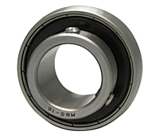

AMI Bearings Demo
MB2-10
Stainless Steel Set Screw Locking Bearing Insert, MB200 Series
Manufacturer Demo Site
This local site preserves the product-page patterns your scraper needs: breadcrumbs, part number, product title, image gallery, document actions, and specification tables.

AMI Bearings Demo
Stainless Steel Set Screw Locking Bearing Insert, MB200 Series

AMI Bearings Demo
Stainless Steel Set Screw Locking Bearing Insert, MSER200 Series

AMI Bearings Demo
Set Screw Locking Wide Slot Take-Up Unit, UCST200 Series

AMI Bearings Demo
Set Screw Locking Take-Up Unit, UCT300 Series